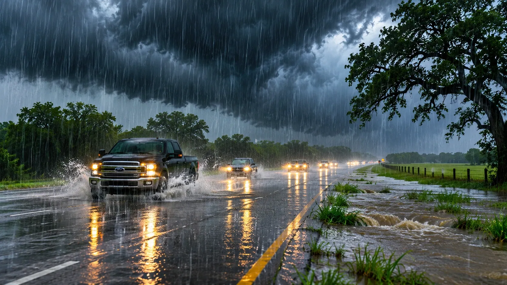

TEXAS WEATHER
When Rain Falls Faster Than Texas Can Drain It
NOVEMBER 8, 2026 · TNS NEWS DESK

A widespread rain event is welcome in a dry region. The trouble begins when the same corridor gets hit again and again.
The central question for South and Central Texas on Sunday is not simply how much rain falls. It is where the heaviest cells repeatedly cross the same roads, creeks and neighborhoods. The Weather Prediction Center issued a mesoscale precipitation discussion early November 8 warning that thunderstorms could train over central and south-central Texas. Its forecast included 2 to 4 inches or more in parts of the South Texas Plains by midmorning, with another 1 to 2 inches possible farther north.
That distinction matters. A regional rainfall total tells us something about drought relief; an intense hourly rate tells us something about whether a low-water crossing becomes dangerous. WPC described potential rates of 1 to 2 inches per hour in the heavier southern storms. Rain falling that quickly can overwhelm drainage even before an impressive storm-total number appears on a weather map.
The Balcones Escarpment is a particular concern because steep terrain and narrow waterways can move runoff rapidly. WPC noted that parts of the area had already received roughly 1 to 2.5 inches during the preceding 6 to 12 hours. Additional rain on already-wet ground changes the equation for drivers and people near creeks.
For residents, the practical advice is unglamorous but important: check the latest warnings before traveling, avoid flooded crossings and do not use a broad forecast to assume your specific road is safe. The strongest storm may miss one town and stall over another. The next radar loop and the next local warning matter more than a dramatic statewide headline.
TNS will continue watching official NWS forecasts and warnings. Rainfall is not the same as a flood disaster, but a forecast of repeating heavy storms deserves attention long before the first road closure.
Sources and continuing coverage
origin-east-www-wpc.woc.noaa.gov · www.weather.gov
Published November 8, 2026. Forecasts and warnings can change. TNS analysis is distinguished from official weather alerts and verified reporting.